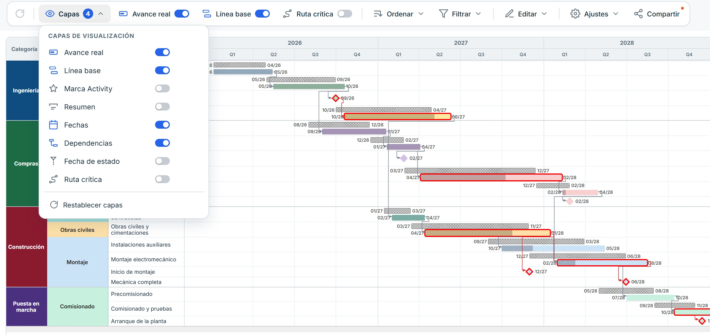
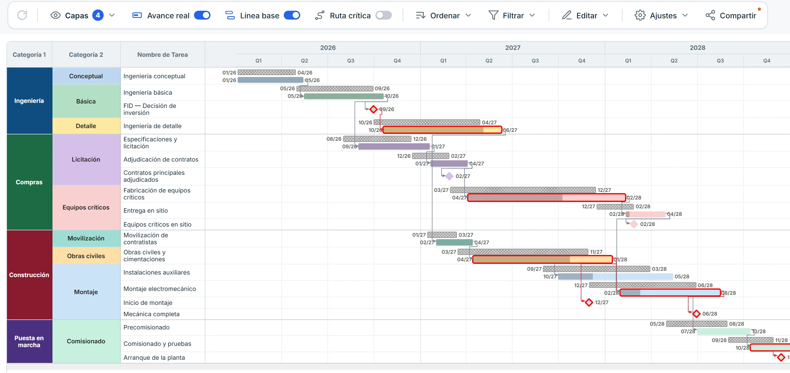
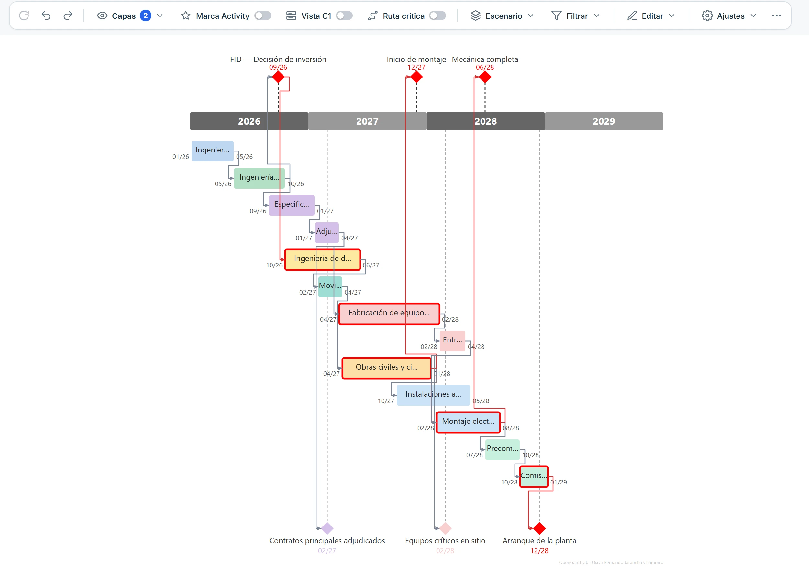
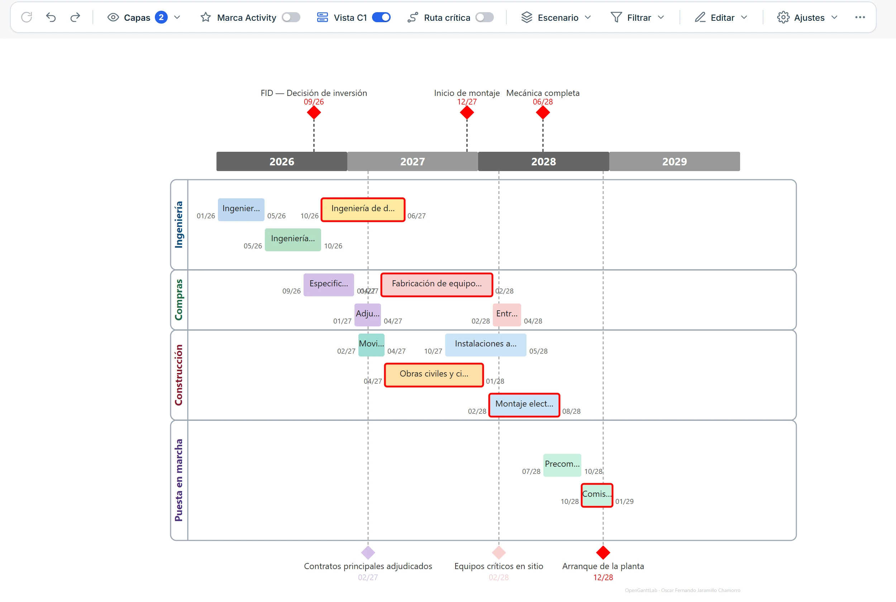
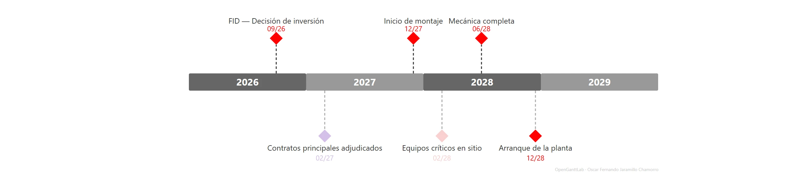

Software libre para control de proyectos
Planifica. Analiza. Decide.
El laboratorio abierto para transformar cronogramas en decisiones.
- Sin instalaciónUn solo archivo que se abre con doble clic
- Tus datos, contigoTodo se procesa en tu equipo
- Código abiertoGNU GPLv3
Listo para usar: guárdalo y ábrelo con tu navegador.

Visualiza
Gantt y Línea de Tiempo interactivos a partir de tu Excel o Project XML.
Analiza
Ruta crítica y dependencias con resaltado de cadena, en cada tarea e hito.
Compara
Línea base contra real y proyectado, escenario por escenario.
Controla
Avance real, fecha de estado e hitos clave siempre a la vista.
Vistas
Una nueva forma de explorar tu cronograma
El mismo cronograma, contado de cuatro maneras. Cambia de vista con un clic y presenta la que mejor cuente tu historia.
Comparador de escenarios
El diagrama de Gantt clásico, pensado para comparar: la línea base sombreada junto al real o proyectado, con su avance.
- Línea base y real en la misma fila
- Avance real dentro de cada barra
- Dependencias y ruta crítica bajo demanda
- Escala de días a años y tabla editable

Línea de tiempo
El diagrama ejecutivo: las mismas tareas, sin ruido, listas para presentar.
- Barras por fase con hitos sobre el eje
- Dependencias con resaltado de la cadena al hacer clic
- Texto, formas y colores editables
- Exporta a PNG, PDF o PowerPoint

Vista agrupada
Agrupa las barras en bandas por categoría y da a cada fase su propio espacio.
- Una banda por Categoría 1, con el color de la Categoría 2
- Reordena bandas y filas arrastrando
- Coloca un hito dentro de su banda
- Ideal para resúmenes de una página

Vista de hitos
Solo lo que importa: los hitos clave del proyecto sobre el eje del tiempo.
- Oculta tareas y filas de resumen
- Hitos arriba y abajo del eje, sin solaparse
- Nombre y fecha configurables
- Perfecta para comités y reportes ejecutivos

Tu cronograma.
Tu máquina.
Tus datos.
Privacidad total
Funciona en tu navegador. Tus archivos nunca salen de tu equipo.
Sin instalación
Sin cuentas, sin servidores. Descarga, abre y trabaja.
Software libre
Puedes leerlo, cambiarlo, mejorarlo y compartirlo. GNU GPLv3.
Características
Todo lo que necesitas para entender tu cronograma
Pensado para quien vive en Project, Primavera o Excel y necesita mostrar el resultado con claridad.
Excel y Project XML
Vincula un Excel con varios escenarios o importa un Project XML, incluso de gran tamaño, con mapeo de campos a tu medida.
Línea base y real
Compara lo planificado con lo real o proyectado, y mide el avance de cada tarea.
Dependencias
Flechas FC, CC, FF y CF entre predecesoras y sucesoras. Un clic resalta la cadena completa de una tarea.
Ruta crítica
Resalta las tareas críticas o filtra el cronograma para ver solo ellas.
Tabla de datos editable
Corrige fechas, avance y predecesoras directamente, con deshacer y rehacer.
Tu estilo
Colores, fuentes, texto libre y formas sobre la Línea de Tiempo, para que se vea como tu marca.
Exporta
PNG, PDF o PowerPoint con un clic, listos para tu presentación.
Comparte
Guarda tu trabajo como un archivo HTML autocontenido e interactivo que cualquiera puede abrir.
Cómo funciona
De tu cronograma a una vista clara en tres pasos
Sin instalador, sin registro y sin configuración previa.
Descarga
Baja OpenGanttLab.html. Es un único archivo, sin dependencias que instalar.
Ábrelo
Doble clic y se abre en tu navegador. Funciona sin conexión.
Carga tu cronograma
Vincula tu Excel o importa un Project XML y empieza a explorar.
Preguntas frecuentes
Lo que suelen preguntar
Respuestas cortas, sin letra pequeña.
¿Necesita internet?
No para trabajar: el archivo se abre y funciona sin conexión. La única excepción es exportar a PowerPoint, que descarga una librería la primera vez.
¿Mis datos se suben a algún servidor?
No. Todo se procesa dentro de tu navegador y tus archivos no salen de tu equipo.
¿Cuánto cuesta?
No es «gratis», es libre. Está bajo la licencia GNU GPLv3: puedes usarlo, estudiarlo, modificarlo y compartirlo, y las versiones derivadas que distribuyas también deben ser libres.
¿Qué formatos de cronograma acepta?
Excel (.xlsx) con varios escenarios y archivos de Microsoft Project en formato XML.
¿Cómo comparto mi trabajo con otras personas?
Con «Compartir» guardas un archivo HTML interactivo que contiene tu cronograma. Se lo envías a quien quieras y lo abre con doble clic.
Empieza en menos de un minuto
Descarga el archivo, ábrelo y carga tu primer cronograma.
Descargar OpenGanttLab.html